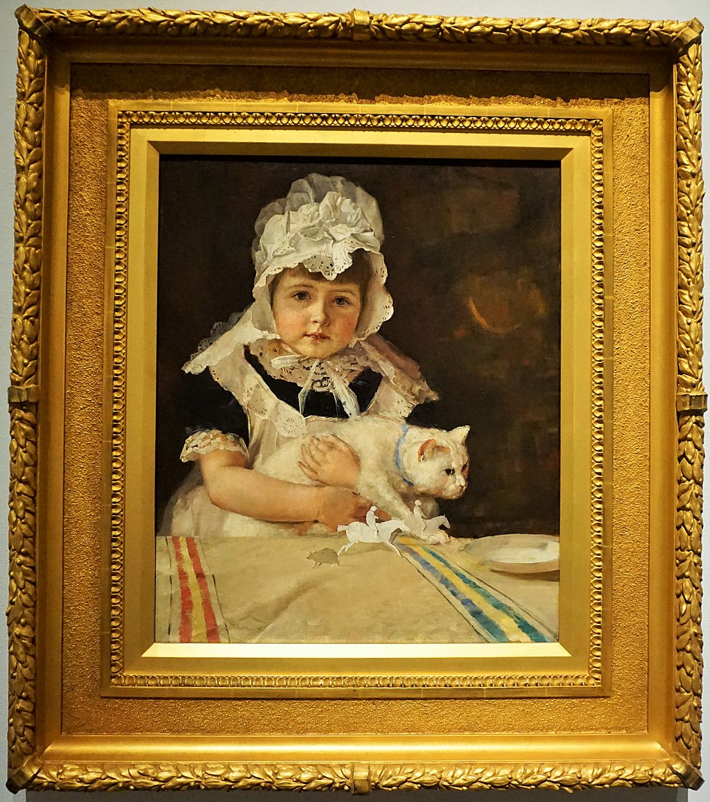

<head>
<meta charset="UTF-8" />
<meta name="keywords" content="drawing, painting" />
<meta name="description" content="drawings by Sunjy" />
<title>Sunjy</title>
<link rel="shortcut icon" type="image/x-icon" href="../../mImages/mCommon/favicon.ico" media="screen" />
<link rel="stylesheet" type="text/css" href="../../mCsses/mCommon/mCssA.css" />
<link rel="stylesheet" type="text/css" href="../../mCsses/mCommon/mCssB.css" />
<link rel="stylesheet" type="text/css" href="../../mCsses/mCommon/mCssC.css" />
<link rel="stylesheet" type="text/css" href="../../mCsses/mCommon/mCssD.css" />
<link rel="stylesheet" type="text/css" href="../../mCsses/mContent/mCssA.css" />
<link rel="stylesheet" type="text/css" href="../../mCsses/mContent/mCssB.css" />
<link rel="stylesheet" type="text/css" href="../../mCsses/mContent/mCssC.css" />
<link rel="stylesheet" type="text/css" href="../../mCsses/mContent/mCssD.css" />
</head>
<script type="text/javascript" src="../../mScripts/mContent/mContentAA.js" /></script>
<script type="text/javascript" src="../../mScripts/mContent/mContentAB.js" /></script>
<script type="text/javascript" src="../../mScripts/mContent/mContentAC.js" /></script>
<script type="text/javascript" src="../../mScripts/mContent/mContentAD.js" /></script>
<script type="text/javascript"></script> 
<script type="text/javascript">
document.write('<div class="mImgAbsolute"></div>');
/*
document.write('<p class="mFontSizeBColor" />From a white paper...</p>');
document.write('<table class="center"><tr><td>');
document.write('');
document.write('</td></tr></table>');
*/
</script>


<script type="text/javascript">
document.write('<p class="mFontSizeBColor" />Miss Minna Simpson</p>');
document.write('<p class="mFontSizeSColor" />“Miss Minna Simpson” by Tom Roberts depicts the five-year-old niece of Tom Roberts’s future wife. The rosy-cheeked face looks directly at the viewer as she firmly holds her cat. There is a confident contrast between the child’s relaxed face and the cat’s scowling face and paws reaching for the bowl of milk.<br><br>Roberts’ tonal palette with the dark background sets off the white apron, bonnet, and lace pays homage to the much-admired international artists Manet, Whistler, and Velásquez.<br></p>');
document.write('<table class="center" /><tr><td>');
document.write('<br>Roberts’ tonal palette with the dark background sets off the white apron, bonnet, and lace pays homage to the much-admired international artists Manet, Whistler, and Velásquez.<br>" />');
document.write('</td></tr></table>');
</script>


